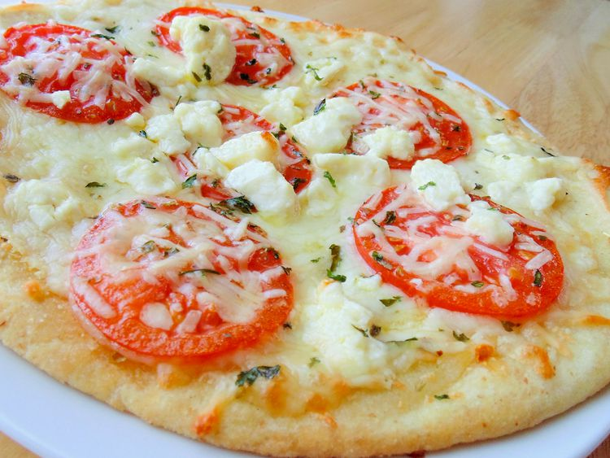

Margherita Pizza

Description
This is a fantastic version of an Italian classic. The feta cheese adds a rich flavor that brings this dish to life. Incredibly easy and incredibly delicious!
Ingredients
- ¼ cup olive oil
- 1 tablespoon minced garlic
- ½ teaspoon sea salt
- etc.
Steps
- Stir together olive oil, garlic, and salt; toss with tomatoes, and allow to stand for 15 minutes. Preheat oven to 400 degrees F (200 degrees C).
- Brush each pizza crust with some of the tomato marinade. Sprinkle the pizzas evenly with Mozzarella and Fontina cheeses. Arrange tomatoes overtop, then sprinkle with shredded basil, Parmesan, and feta cheese.
- etc.